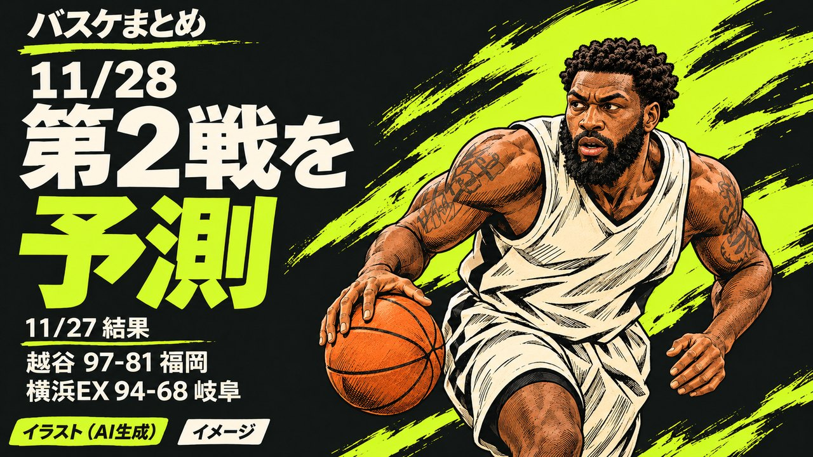

越谷アルファーズが福岡に97-81、ONE11/28の第2戦を予測

11月27日のB.LEAGUE ONEで、越谷アルファーズが福岡に97対81で勝ちました。横浜EXも岐阜に94対68で勝っています。
この記事では、前日の予測と結果を照らし合わせます。そのうえで、11月28日の第2戦の見通しを分析します。
【事実】11/27の2試合は上位チームが勝利
福岡対越谷は、越谷が97対81で勝ちました。会場は福岡の照葉積水ハウスアリーナです。
横浜EX対岐阜は、横浜EXが94対68で勝ちました。会場は横浜武道館です。
越谷は18勝2敗で、北地区の1位です。得失点差は+309です。
横浜EXは13勝6敗で、中地区の1位です。岐阜は4勝16敗で、中地区の5位です。
福岡は8勝11敗で、南地区の3位です。
【検証】前日の予測は2試合とも的中
前日の記事では、福岡対越谷は越谷の勝利を予測しました。横浜EX対岐阜も、横浜EXの勝利を予測しました。
越谷は1試合平均の得失点差が+15.4点でした。この試合の点差は16点で、平均に近い内容です。
福岡は平均79.5点に近い81点を取りました。しかし越谷の97点は止められませんでした。
結果はどちらも予測どおりです。
横浜EXの94点は、平均の約92.6点をやや上回りました。岐阜の68点は、平均の約77.7点を10点近く下回っています。
岐阜のアウェー成績は0勝9敗になりました。前日に挙げた「アウェー未勝利」という見立てが、数字で続いた形です。
得点者や出場時間は、この記事では扱いません。個人の内容は未確認です。
【分析】越谷は第1戦でも守備の差を見せた
越谷の通算は、1試合平均で約92.2点です。
失点は約76.8点に抑えています。差は+15.5点です。
福岡は約79.6点を取り、約80.8点を失っています。差は-1.3点です。
越谷はアウェーで11勝2敗です。連勝は6に伸びました。
福岡は2連敗です。ホームで連敗が止まるかが、第2戦の焦点です。
【事実】第2戦の日程とインジュアリーリスト
福岡対越谷の第2戦は、11月28日の14時5分に始まります。横浜EX対岐阜は、15時5分からです。
公式リストは11月27日付です。福岡はサゲ・トルバート三世選手が右膝蓋腱断裂で載っています。
福岡のルーズベルト・アダムス選手は、11月26日にリストから抹消されました。第2戦の出場は未確認です。
越谷は四家魁人選手が左大腿部筋損傷で載っています。岐阜はエリック・マクリー選手が右アキレス腱断裂です。
横浜EXに、今季のリスト掲載選手はいません。
【予測】福岡対越谷は、越谷の連勝が続く可能性が高い
予測は、越谷が勝つ可能性が高いです。失点の少なさと、アウェーの強さが根拠です。
ただし、第1戦は16点差でした。福岡が修正して、接戦に持ち込む余地はあります。
見るポイントは、福岡が越谷の守備から何点を取れるかです。80点台に乗せられれば、試合は競ります。
【予測】横浜EX対岐阜は、横浜EXが有利
予測は、横浜EXが勝つ可能性が高いです。岐阜はアウェー9戦で未勝利だからです。
横浜EXは平均で約9.2点上回っています。岐阜は約9.7点下回っています。
見るポイントは、岐阜が68点から得点を伸ばせるかです。平均の77点台に届かないと、勝負は厳しくなります。